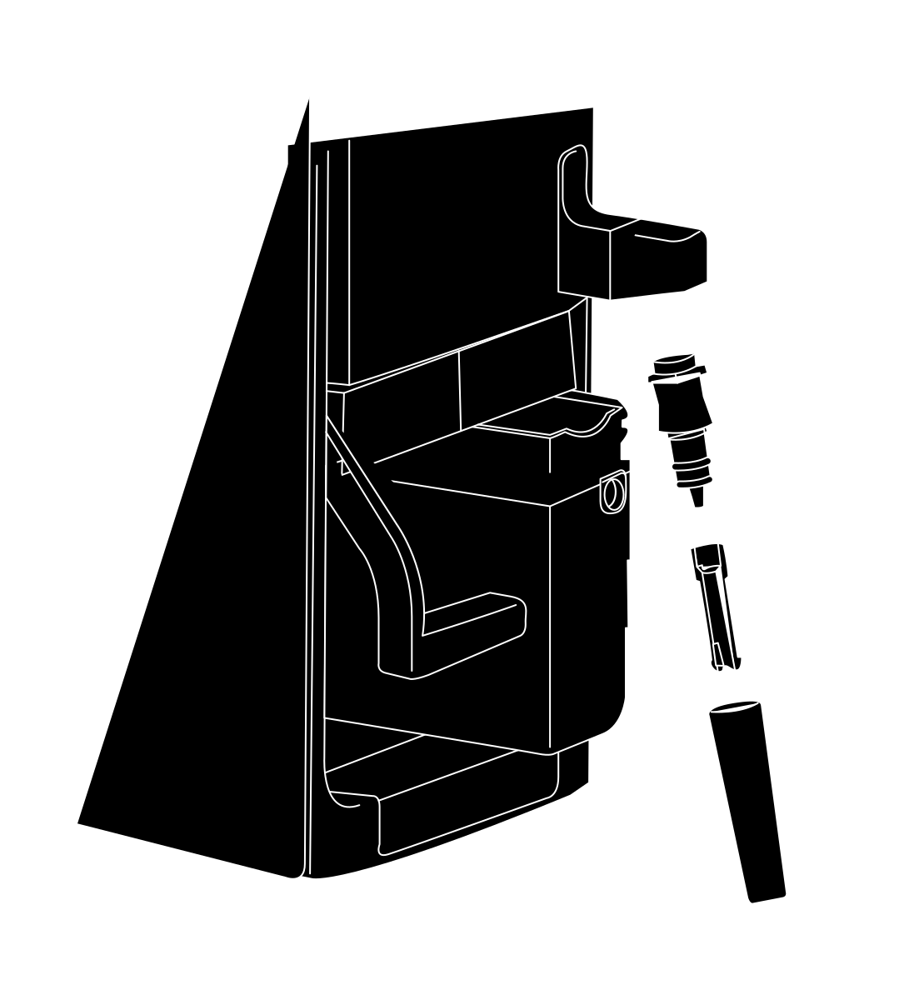

ESSENCE® Espresso/Cappuccino Machine
ESSENCE® Espresso/Cappuccino Machine
- FROTH WAND PIVOT
- FROTH WAND BASE
- AERATOR
- FROTH WAND SHEATH
- Remove the Froth Wand sheath by gently pulling downward.
- Turn the sheath upside down and press out the aerator (a small, spinning piece inside the sheath).
- Unscrew the Froth Wand base from the Espresso/Cappuccino Machine.
COMPONENT REMOVAL AND DISASSEMBLY
FROTH WAND DISASSEMBLY
A
B
C
D
1
2
3
